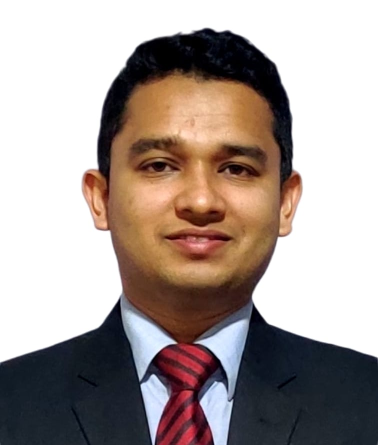

01
A comprehensive review of carbon dioxide capture, transportation, utilization, and storage: a source of future energy
Researcher working at the intersection of carbon capture, clean energy and renewable energy systems. Author of peer-reviewed work in Springer, Elsevier, Wiley and Taylor & Francis journals, with a focus on translating engineering science into climate solutions for Bangladesh and beyond.

I am Md. Sadman Anjum Joarder, a mechanical engineer and early-career researcher from Bangladesh. I currently serve as an Instructor at the Directorate of Technical Education (9th Grade, 43rd BCS Non-Cadre) and have been recommended for Assistant Engineer (Mechanical), Roads and Highways Department through the 44th BCS Cadre.
My research sits at the intersection of carbon dioxide capture, utilization and storage (CCUS), renewable energy systems, and techno-economic analysis of clean-energy technologies. I have authored or co-authored seven peer-reviewed journal articles in Q1/Q2 venues including Environmental Science and Pollution Research (Springer), Separation Science and Technology (Taylor & Francis), Heliyon, Sustainable Chemistry for Climate Action, Innovation and Green Development (all Elsevier), Cleaner Waste Systems and the International Journal of Photoenergy (Wiley).
Through my work I aim to make low-carbon transitions practical for the Global South — using process simulation, technoeconomic modelling and policy-aware engineering to design carbon capture pathways, recycle PV waste, convert agricultural residue to energy, and accelerate grid-connected solar adoption in institutions across Bangladesh.
From CO₂ separation chemistry to grid-scale renewable adoption — each strand maps to a concrete decarbonisation lever for emerging economies.
Reviewing and engineering CCUS pathways — from solvent and membrane separation of industrial flue gases to long-term geological storage.
Technoeconomic and environmental analysis of grid-connected institutional PV, plus comparative design studies using RETScreen.
Mapping perspectives, challenges and opportunities for green development across South Asia's high-density grids.
Simulating biocrude production from microalgae (P. tricornutum, S. platensis, C. vulgaris) and converting agricultural residue into watts.
Multi-parameter operational anomaly detection in EV charging infrastructure for safer, more reliable e-mobility.
PV module end-of-life recycling and e-waste policy strategies — engineering solutions for pollution prevention.
A growing body of work published with Springer, Elsevier, Wiley and Taylor & Francis — plus five manuscripts currently under peer review at IEEE Access and other Q1 venues.
I welcome research collaborations, co-authorship invitations, supervision discussions and conversations about clean-energy policy for the Global South.